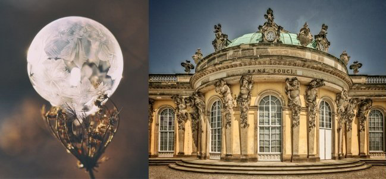
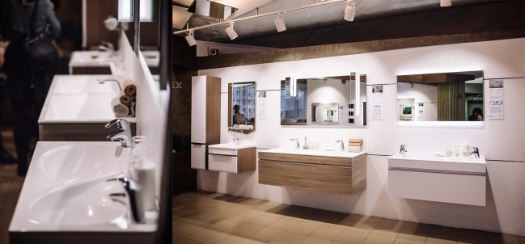

Наш процесс создания мебели происходит следующих образом:
 Создание нового комплекта – трудоемкий и продолжительный процесс. Мы расскажем вам, какие этапы проходят наши комплекты до поступления в продажу.1) Возникновение идеи
Любой созидательный процесс начинается с идеи. При разработке концепции нового комплекта мебели для ванной комнаты главный дизайнер черпает вдохновение из окружающего мира, архитектуры и предметов искусства. Кроме того, она регулярно посещает тематические выставки, проходит обучение, постоянно изучает и отслеживает тенденции в дизайне. Немаловажную роль при разработке нового гарнитура играет общение с клиентами. Для нас, как для производителя, обратная связь играет важную роль.
Наша основная цель - производить и предоставлять красивую мебель, которая несет эмоции и впечатления, но при этом удобна и функциональна.

2) Проектирование, подбор материалов
После появления концепции нового продукта начинается этап проектирования. Дизайнером создаются эскизные рисунки будущего комплекта, конструкторы делают предварительные расчеты и чертежи. Далее по проведенным расчетам делаются первые ЗD-модели. Подбираются материалы и фурнитура.
Мы тщательно подходим к выбору поставщиков. На нашем производстве есть собственная лаборатория для оценки качества поставляемого сырья. Только проведя ряд испытаний, мы выбираем те материалы, которое соответствует нашим стандартам качества.
Разработка чертежей и подбор материалов может продолжаться от 2-х недель до 3-4 месяцев. Все зависит от сложности технологии изготовления нового продукта.

3) Создание прототипа
После утверждения чертежей и согласования выбранных материалов, мы приступаем к созданию прототипа. Главная задача на этом этапе реализовать идею дизайнера, создав при этом функциональную и удобную мебель. Благодаря квалифицированным специалистам и современному оборудованию, мы можем реализовывать нестандартные дизайнерские решения. Когда на производство поступает все необходимое сырье для выпуска прототипа, начинается его изготовление.
По готовности предсерийный образец проходит ряд проверок и испытаний. Оценивается его функциональность, внешний вид, сочетание материалов и цветов. Выявляется наличие шагрени*, деформаций. Если между ящиками или дверцами слишком большие щели или зазоры, то комплект отправляется на доработку. Период изготовления и тестирования может занимать от 2‐х недель до 3-4 месяцев. Если продукт имеет сложную техническую реализацию, то может быть изготовлен и протестирован не один прототип. Так как на этом этапе нас может ожидать много сюрпризов.

Когда предстерийный образец отвечает ожиданиям конструктора и дизайнера, мебель запускается в серийное производство. На нашем сайте размещаются красивые ЗD-визуализации, начинается его продвижение отделом маркетинга: размещение новостей в социальных сетях, информирование клиентов, печать обновленных каталогов. Готовый к продаже гарнитур мы выставляем в нашем шоу-руме.
В процессе разработки и создания мебельного комплекта участвует вся компания. Основная работа по созданию новой модели выполняется дизайнером и конструкторами. Одел закупок отвечает за своевременную поставку материалов. Сотрудники производства и сборки реализуют дизайнерско-конструкторский замысел, делая готовый продукт. Отдел маркетинга совместно с отделом продаж разрабатывает стратегию продвижения новинки. Для того, чтобы в вашей ванной появилась новая мебель задействован труд десятков специалистов.
4) Запуск серийного производства
Когда предстерийный образец отвечает ожиданиям конструктора и дизайнера, мебель запускается в серийное производство. На нашем сайте размещаются красивые ЗD-визуализации, начинается его продвижение отделом маркетинга: размещение новостей в социальных сетях, информирование клиентов, печать обновленных каталогов. Готовый к продаже гарнитур мы выставляем в нашем шоу-руме.
В процессе разработки и создания мебельного комплекта участвует вся компания. Основная работа по созданию новой модели выполняется дизайнером и конструкторами. Одел закупок отвечает за своевременную поставку материалов. Сотрудники производства и сборки реализуют дизайнерско-конструкторский замысел, делая готовый продукт. Отдел маркетинга совместно с отделом продаж разрабатывает стратегию продвижения новинки. Для того, чтобы в вашей ванной появилась новая мебель задействован труд десятков специалистов.